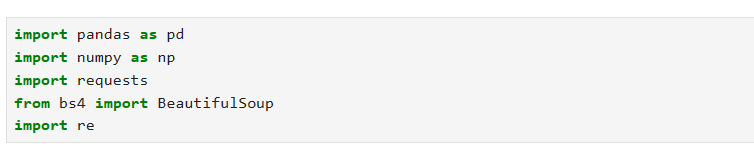
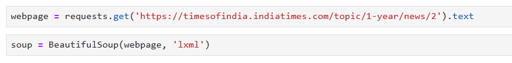
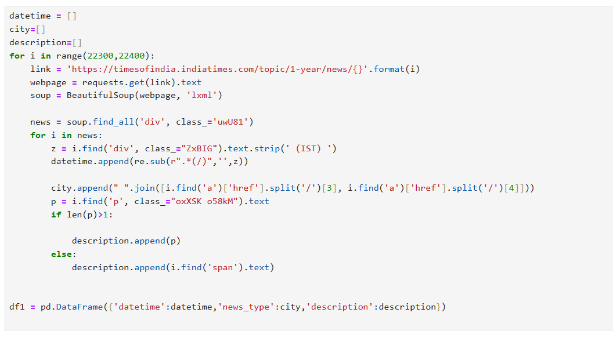
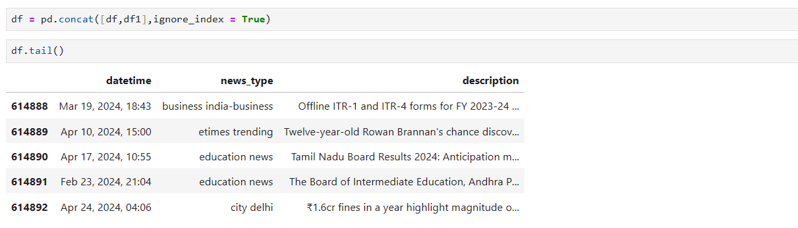
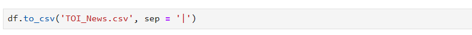

Introduction
Now that we have understood the data, we will focus on extracting it.
- We will first import the basic libraries. 
- Next, we will use the request library to extract the webpage and the BeautifulSoup library to read that webpage. 
- Every paragraph has the same class tag, so we will contain those in a variable and find the required data from there. Here is the full code. 
- In the above code, we created three variables: datetime, city, and description, and created a dataframe using the pandas library. The range of the page is up to 22,400. I ran it from 0.
- This dataframe (df1) will be added to the previous dataframe that I created with a range less than shown. Hence, we will get the below dataframe. 
- Now we will save this data into a CSV file. The next part is data cleaning. 